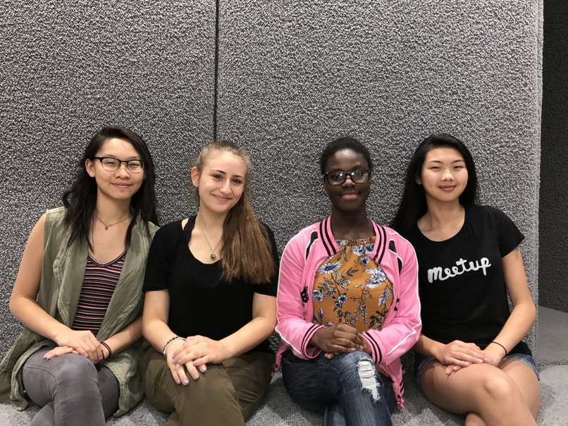

The essential travel guide- made for women, by women.

IMG Credit: http://weheartit.com/entry/238827160

IMG Credit: http://weheartit.com/entry/238827160
"As girls who code, we recognize the restrictions on women present in all aspects of life, and are dedicated to making change in the world to aid this. Worldly is our way of shining a light on the different issues female travelers face all around the world. Through Worldly, we hope to help female travelers navigate through the many strict cultural norms and cultural etiquettes directed specifically towards women throughout the world."
